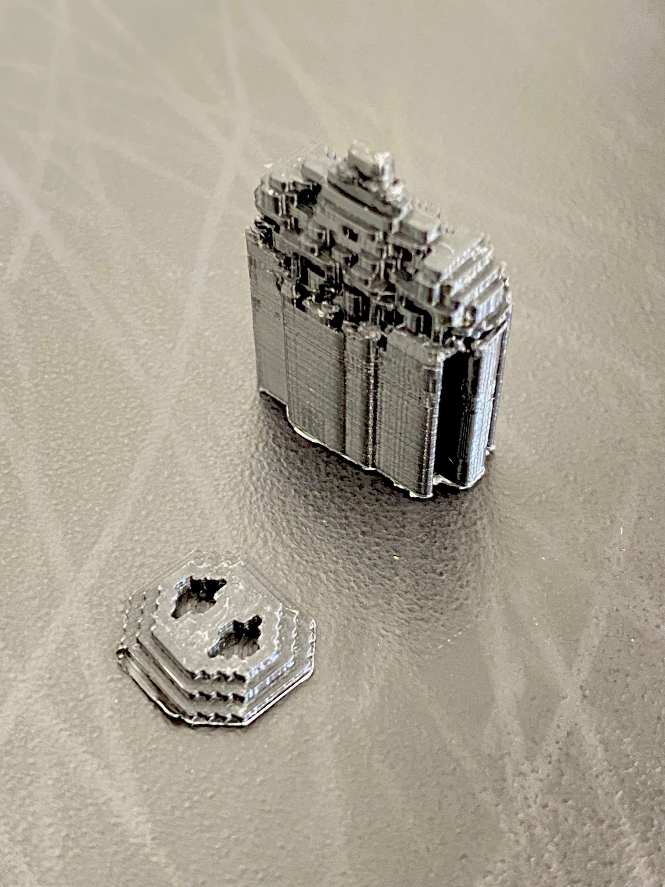
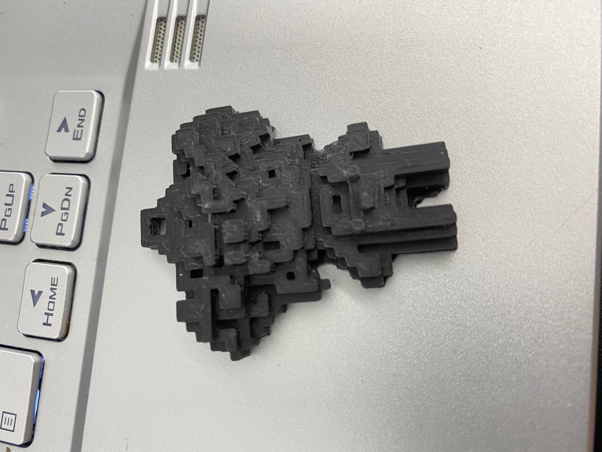

These are scculptures taken from Minecraft into the real world via 3D printing. The first used scaffolding which made it difficult to see the details of the figure. In the second, I printed it back-down instead which allowed me to get all of the detail available.  